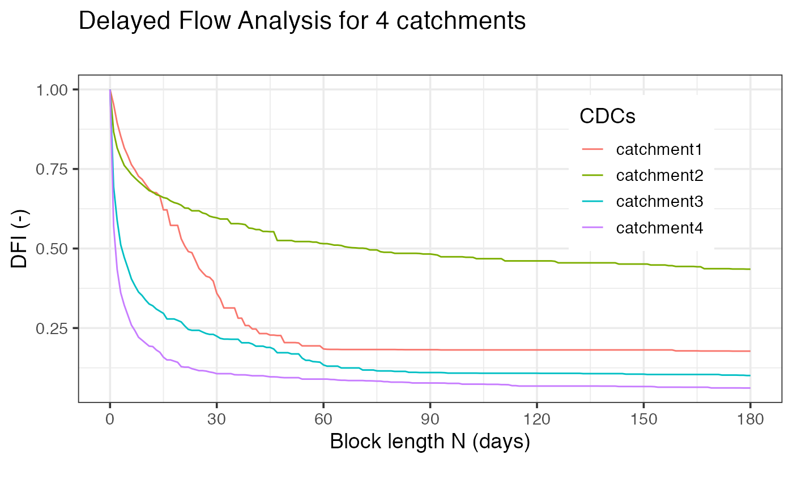
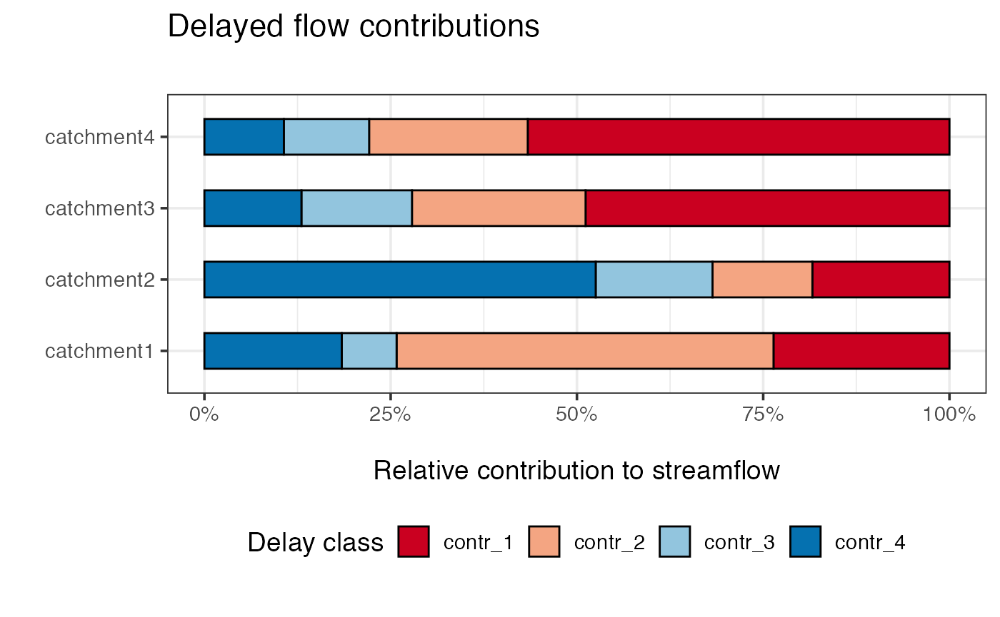

02 - Delayedflow Analysis in R tidyverse
Michael Stölzle
9/25/2020
Source:vignettes/tidy_streamflow_contr.Rmd
tidy_streamflow_contr.RmdThis is a quick example how to use the delayedflow package in a R tidyverse environment:
- here we using
tidyversesyntax - the 4 catchments coming from different streamflow regimes in Switzerland (rain, hybrid, snow)
devtools::install_github(modche/delayedflow)Load data
df <- read_tsv('https://raw.githubusercontent.com/modche/science_contr/master/4ezg.txt', col_types = cols())CDC: Calculation and plotting
First of all, CDCs for all catchments are generated. For this a delayed flow separation is performed for all block length between 1 and 180. The plot highlights the differences of the CDCs of four catchments.
df %>%
group_by(filename) %>%
summarise(cdc = dfi_n(q = q, n = 1:180)$dfi, .groups = "keep", n = 0:180 ) %>%
ungroup() %>%
ggplot(aes(x=n, y = cdc)) +
geom_line(aes(colour = filename)) +
scale_x_continuous(breaks = c(0:6 * 30)) +
theme_bw(14) +
labs(title = "Delayed Flow Analysis for 4 catchments",
subtitle = "",
caption = "",
colour = "CDCs",
x = "Block length N (days)", y = "DFI (-)")+
theme(legend.position = c(0.80, 0.70))
Breakpoint estaimates
df2 <- df %>%
group_by(filename) %>%
summarise(cdc = dfi_n(q = q, n = 1:180)$dfi, .groups = "keep", n = 0:180 ) %>%
ungroup()
df2## # A tibble: 724 × 3
## filename cdc n
## <chr> <dbl> <int>
## 1 catchment1 1 0
## 2 catchment1 0.953 1
## 3 catchment1 0.895 2
## 4 catchment1 0.853 3
## 5 catchment1 0.816 4
## 6 catchment1 0.791 5
## 7 catchment1 0.764 6
## 8 catchment1 0.747 7
## 9 catchment1 0.727 8
## 10 catchment1 0.718 9
## # … with 714 more rows
bp_df <- df2 %>%
group_by(filename) %>%
summarize(bps = find_bps(cdc, n_bp = 3, bp_max = 65)$bps_position) %>%
mutate(id = names(bps)) %>%
ungroup() %>%
pivot_wider(names_from = "id", values_from = "bps")## Calculating breakpoints...Done.
##
## Calculating breakpoints...Done.
##
## Calculating breakpoints...Done.
##
## Calculating breakpoints...Done.
bp_df## # A tibble: 4 × 4
## filename bp_1 bp_2 bp_3
## <chr> <int> <int> <int>
## 1 catchment1 6 38 60
## 2 catchment2 2 11 47
## 3 catchment3 3 16 61
## 4 catchment4 2 8 30| Col1 | Breakpoint 1 | Breakpoint 2 |
|---|---|---|
| catchment1 | 1 | 12 |
| catchment1 | 2 | 13 |
| catchment1 | 3 | 13 |
| catchment1 | 4 | 14 |
Relativ streamflow contributions
## Calculating breakpoints...Done.
##
## Calculating breakpoints...Done.
##
## Calculating breakpoints...Done.
##
## Calculating breakpoints...Done.## # A tibble: 16 × 3
## filename rel_contr class
## <chr> <dbl> <chr>
## 1 catchment1 0.236 contr_1
## 2 catchment1 0.506 contr_2
## 3 catchment1 0.0736 contr_3
## 4 catchment1 0.184 contr_4
## 5 catchment2 0.184 contr_1
## 6 catchment2 0.134 contr_2
## 7 catchment2 0.157 contr_3
## 8 catchment2 0.525 contr_4
## 9 catchment3 0.488 contr_1
## 10 catchment3 0.233 contr_2
## 11 catchment3 0.148 contr_3
## 12 catchment3 0.130 contr_4
## 13 catchment4 0.566 contr_1
## 14 catchment4 0.213 contr_2
## 15 catchment4 0.114 contr_3
## 16 catchment4 0.107 contr_4Plot relative contributions
ggplot(data = contr_df) +
geom_col(aes(x = rel_contr, y = filename, fill = class),
width = 0.50,
colour = "black") +
scale_fill_brewer(palette = "RdBu",
direction = 1,
guide = guide_legend(reverse = FALSE),
name = "Delay class") +
scale_x_continuous(labels = scales::percent_format()) +
theme_bw(14) +
theme(legend.position = "bottom") +
labs(title = "Delayed flow contributions",
subtitle = "",
caption = "",
x = "\nRelative contribution to streamflow", y = "")
Interpretation of the results
In this example Catchment #1 has a high proportion of intermediate contributions (i.e. here snow melt from a high alpine catchment). Catchment #2 has > 50% baseline contributions that means it is highly groundwater-dominated. Comparing Catchment #4 vs. Catchment #3 the first one has more short-delayed contributions also visible in the rapid drop in the CDC curve above.